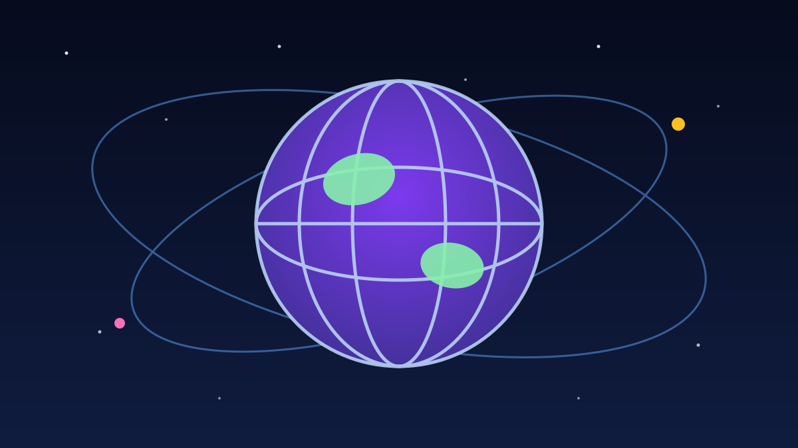

1 / 7

🌍 DUNIA
PM-nya mundur hari Jumat, sorenya ditunjuk lagi
Satu pemerintahan Mauritania mundur buntut listrik mati berhari-hari. Plot twist-nya nggak ketebak. Geser →
2 / 7
📜
Mundurnya kapan?
Jumat (9/10/2026), PM Mokhtar Ould Djay menyerahkan pengunduran diri seluruh pemerintahannya ke Presiden Mohamed Ould Cheikh El Ghazouani di istana presiden, Nouakchott.
Djay adalah PM ketiga era Presiden Ghazouani dan sudah menjabat sejak Agustus 2024.
3 / 7
⚡
Kenapa sampai mundur?
Dua gardu transformator milik Somelec — perusahaan listrik negara — kebakaran pada 21 dan 22 Agustus, selisih kurang dari 24 jam. Akibatnya listrik mati 3–5 hari di sebagian besar Nouakchott plus kota Ouad Naga, Idini, dan Aouleigat.
Parahnya, sekitar 50 pabrik pengolahan dan pembekuan ikan ikut terdampak, stoknya rusak.
4 / 7
📋
Laporannya bilang apa?
Sehari sebelum mundur, Kamis (8/10), komisi independen menyerahkan laporan keras: "serious shortcomings" — kelalaian serius soal pencegahan, proteksi listrik, supervisi kerja, dan manajemen darurat.
Penyebab paling mungkin: overheating dari 3 jalur listrik baru. Dan penting: tidak ada bukti sabotase atau kesalahan operasional.
5 / 7
🔄
Plot twist: ditunjuk lagi!
Beberapa jam setelah menerima pengunduran diri, di hari yang sama, presiden justru menunjuk kembali Djay sebagai PM dan memintanya membentuk pemerintahan baru.
Komposisi pemerintahan baru diumumkan Sabtu (10/10). Mundur, direset, naik lagi — semua dalam 24 jam.
6 / 7
💬
Kata netizen
Komentar di postingan Facebook TribuneEchos (berbahasa Prancis) kebanjiran rasa kagum: "Au Tchad c'est le contraire." — maksudnya, di Chad hal seperti ini tidak akan terjadi. Banyak yang memuji pejabat yang berani bertanggung jawab. (Suara netizen — bukan fakta.)
7 / 7
🤔
Efeknya ke lo apa?
Bayangin pejabat mundur gara-gara listrik mati berhari-hari. Listrik itu tulang punggung hidup lo: ngecas HP, internet, kerja remote, usaha kuliner — semua mati kalau listrik padam.
Pelajaran dari Nouakchott: infrastruktur yang kelihatan sepele bisa bikin satu negara goyang. Sedia powerbank, dan hargai tiap kilowatt yang lo pakai.